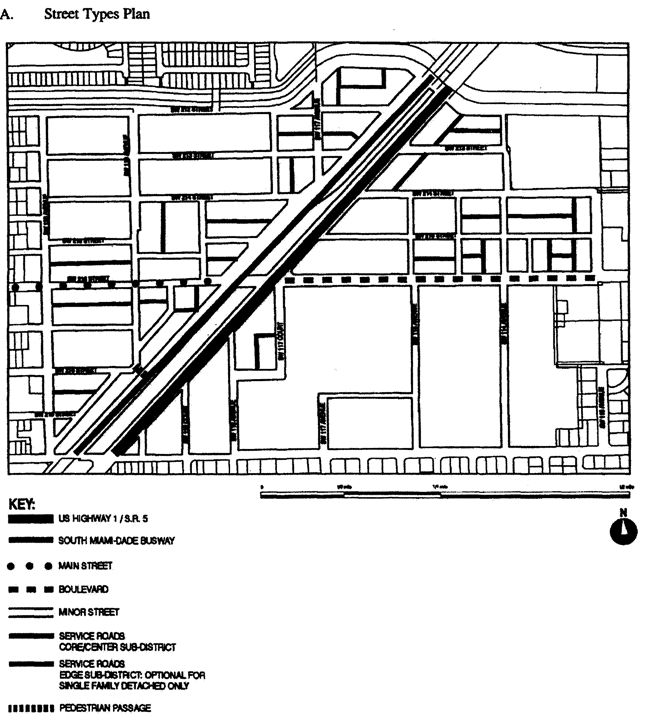

Sec. 33-284.91. Purpose and Intent.
Sec. 33-284.92. Goulds Community Urban Center District (GCUC) Requirements.
Sec. 33-284.94. The Regulating Plans.
Sec. 33-284.95. Building Placement and Design and Street Type Development Parameters.
Sec. 33-284.96. Conflicts with other Chapters and Regulations.
Sec. 33-284.97. Non-conforming Structures, Uses, and Occupancies.
Sec. 33-284.91.
A.
The regulations contained in this chapter and Chapter 18A, Landscape Code, Code of Miami-Dade County, Florida, shall apply to this article, except as otherwise added to or modified herein.
B.
The Illustrative Master Plan (Figure 1), illustrates the citizens' vision and may be used to interpret this article. Where the Illustrative Master Plan conflicts with the text of this article, the text shall govern.
C.
The boundaries shown in Figure 1 shall constitute the Goulds Community Urban Center Boundary Plan and are generally described as follows: from the intersection of the south side of the right-of-way of the Black Creek Canal with the extension of the centerline of SW 114th Avenue, then south along the centerline of SW 114th Avenue to the centerline of SW 214th Street, then east along theoretical SW 214th Street to the centerline of SW 113th Avenue, then south along the centerline of SW 113th Avenue to the centerline of SW 216th Street, then west along the centerline of SW 216th Street to the centerline of SW 115th Avenue, then south along the centerline of SW 115th Avenue to the centerline of SW 220th Street, then west along the centerline of SW 220th Street to a point located approximately 190 feet west of the centerline SW 120th Avenue, then north along an imaginary line at 190 feet to the west of the centerline of SW 120th Avenue to the south side of the right-of-way of the Black Creek Canal, then east along the south side of the right-of-way of the Black Creek Canal to the beginning point.
A more detailed legal description of the boundaries follows:
Beginning in the intersection of south side of the R/W of the Black Creek Canal and the centerline of SW 114th Avenue, then South along the centerline of SW 114th Avenue to the intersection with the centerline of SW 214th Street, then East along the centerline of 214th Street, to the intersection with the centerline of SW 113 Avenue, then South along the centerline of SW 113 Avenue to the intersection with the centerline of SW 216th Street, then Westerly along the centerline of SW 216th Street to the intersection with the centerline of SW 115 Avenue, then South along the centerline of SW 115 Avenue to the intersection with the centerline of SW 220th Street, then West along the centerline of SW 220th Street to a point located approximately 190 feet West of the centerline of SW 120th Avenue, and intersecting with the centerline of the SW 220th Street, then North along an imaginary line at 190 feet parallel and west of the centerline of SW 120th Avenue to the intersection with the south side of the R/W of the Black Creek Canal, then East along the south side of the R/W of the Black Creek Canal to the point of beginning (the intersection with the centerline of SW 114th Avenue).
D.
Full scale maps of the Illustrative Master Plan presented in Figure 1, as well as all the Regulating Plans and Street Development Parameters figures in this article, are on file with the Miami-Dade Department of Planning and Zoning.
E.
No provision in this article shall be applicable to any property lying outside the boundaries of the Goulds Community Urban Center District (GCUC) as described herein. No property lying within the boundaries of the GCUC shall be entitled to the uses or subject to the regulations provided in this article until an application for a district boundary change to GCUC has been heard and approved in accordance with the provisions of this chapter.
(Ord. No. 05-144, § 1, 7-7-05)
Sec. 33-284.92.
Except as provided herein, all developments within the GCUC shall comply with the requirements provided in Article XXXIII(K), Standard Urban Center District Regulations, of this code.
(Ord. No. 05-144, § 2, 7-7-05)
Except as provided herein, all permitted, conditionally permitted, and temporary uses within the GCUC shall comply with Section 33-284.83 of this Code.
A.
Permitted Uses. The following uses shall be permitted in the Store Porch Special District (SD) Area:
1.
outdoor produce markets
2.
on lots fronting a Main Street, all uses permitted in Mixed Use Main Street (MM)
3.
all uses permitted in the Mixed Use Corridor (MC)
B.
Conditionally Permitted Uses. An entertainment center shall be permitted after public hearing pursuant to Section 33-311(A)(3) of this code, provided that the following conditions are also satisfied:
1.
The site contains a minimum of 5 net acres and a maximum of 20 net acres.
2.
A landscaped buffer of 25 feet is provided along all property lines, allowing only access and egress therein, except that Main Street frontage shall comply with the Building Placement and Design Parameters.
3.
All buildings are setback a minimum of 30 feet from all property lines except along a Main Street.
(Ord. No. 05-144, § 3, 7-7-05; Ord. No. 06-10, § 5, 1-24-06)
Sec. 33-284.94.
The Regulating Plans shall consist of the following controlling plans, as defined and graphically depicted in this section.
A.
The Street Types Plan, which establishes a hierarchy of street types in existing and future locations. The five Street Types and the hierarchy of streets (from most important to least important in accommodating all types of activity) are U.S. 1, Main Street, Boulevard, Minor Street, and Service Road.
B.
The Sub-districts Plan, which delineates 3 Sub-districts: Core, Center and Edge. These Sub-districts shall regulate the allowable intensity of development in accordance with the Comprehensive Development Master Plan and this article.
C.
The Land Use Plan, which delineates the areas where specified land uses and development of various types and intensities shall be permitted.
D.
The Building Heights Plan, which establishes the minimum and maximum allowable number of stories.
E.
The Designated Open Space Plan, which designates open spaces. The designated open spaces shall be controlled by anchor points.
F.
The New Streets Plan, which shows the location and the number of new streets needed to create the prescribed network of streets within each Urban Center District. All new A streets shall be required in the same general location as shown on the New Streets Plan. All B streets shall be located as provided in Section 33-284.86(F) of this code.
G.
The Bike Route Plan, which depicts the designated bike routes, including the bike facility requirements if any, which shall be shown in all development plans.

Street Types Plan
Sub-Districts Plan
Land Use Plan
Building Heights Plan
Designated Open Space Plan
New Street Dedications Plan
Bike Route Plan
(Ord. No. 05-144, § 4, 7-7-05; Ord. No. 06-10, § 6, 1-24-06; Ord. No. 07-95, § 1, 7-10-07)
Sec. 33-284.95.
A.
All new development and redevelopment within the GCUC shall comply with the Building Placement and Design Parameters as provided in Section 33-284.85 of this code.
B.
All new development and redevelopment within the GCUC shall comply with the Street Type Parameters as provided herein:
| Street type | Minimum Required Configuration | |
| Core/Center | Edge | |
| U.S. 1 | As provided in this section | |
| Main Street | As provided in this section | |
| Boulevard | Street type 1, parking both sides | Street type 1 or 2 |
| Minor Street | Street type 4, parking one side | Street type 4 or 5 |
| Service Road | As provided in Section 33-284.85 | |
| Pedestrian Passage | As provided in Section 33-284.85 | |
C.
Unless otherwise provided by the Building Placement and Design Parameters in Section 33-284.85 of this code, the following front and side street setbacks shall be required within the GCUC:
| Street type | Required Setback | ||
| Core | Center | Edge | |
| U.S. 1 | 6 feet | 6 feet | 10 feet |
| Main Street | 0 feet* | 0 feet* | 10 feet |
| Boulevard | 0 feet | 0 feet | 10 feet |
| Minor Street | 10 feet | 6 feet | 10 feet |
| Service Road | 0 feet | 0 feet | 0 feet |
| Pedestrian Passage | 0 feet | 0 feet | 10 or 15 feet |
| *Colonnade required | |||
Store Porch Special District
U.S. 1/S.R. 5 Core/Center
SW 216 Street/Main Street West of U.S. 1 Core
(Ord. No. 05-144, § 5, 7-7-05; Ord. No. 07-95, § 2, 7-10-07)
Sec. 33-284.96.
This article shall govern in the event of conflicts with other zoning, subdivision, or landscape regulations of this code, or with the Miami-Dade Department of Public Works Manual of Public Works.
(Ord. No. 05-144, § 5, 7-7-05)
Sec. 33-284.97.
Nothing contained in this article shall be deemed or construed to prohibit a continuation of a legal nonconforming structure, use, or occupancy in the GCUC that either (1) was existing as of the date of the district boundary change on the property to GCUC District or (2) on or before said date, had received final site plan approval through a public hearing pursuant to this chapter or through administrative site plan review or had a valid building permit. However, any structure, use, or occupancy in the GCUC District that is discontinued for a period of at least six months, or is superseded by a lawful structure, use or occupancy permitted under this chapter, or that incurs damage to the roof or structure to an extent of 50 percent or more of its market value, shall be subject to Section 33-35(c) of this code. However, a lawfully existing single-family home use that is discontinued for a period of at least six months or that incurs damage to the roof or structure to an extent of 50 percent or more of its market value, shall not be subject to Section 33-35(c) of this code.
(Ord. No. 05-144, § 5, 7-7-05; Ord. No. 06-10, § 7, 1-24-06)